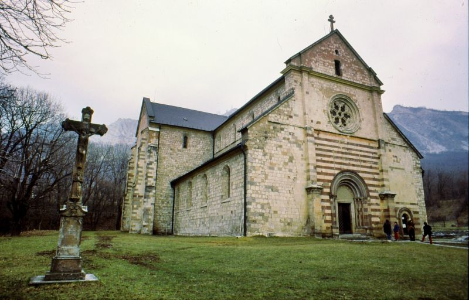

Elhelyezkdés:
A Bükk-vidék az Északi-középhegységben található földrajzi középtáj, Magyarország legnagyobb átlagmagasságú, barlangokban bővelkedő karszthegysége. Középső területe 1977 óta nemzeti park . Nevét leggyakoribb fájáról, a bükkről kapta. Az Északi-középhegység egyetlen olyan hegysége, amely nem vulkanikus eredetű. A Bükk-vidéken található Magyarország legnagyobb összefüggő erdőterülete, közel 100 000 hektár.
Látnivalók:
Bükk látnivalói, kirándulások Szilvásvárad és Szalajka-völgy A Bükk és Észak-Magyarország egyik leglátogatottabb helye a Szilvásvárad melletti Szalajka-völgy. A kisvasúttal és könnyed gyaloglással elérhető Szalajka-völgy rejti hazánk egyik legszebb vízesését, a Fátyol-vízesést. A völgy és a város látnivalóiról olvashatsz részletesebben is:
Szilvásvárad és a Szalajka-völgy látnivalói
A Bükk egyik legismertebb látnivalója, a Fátyol-vízesés Bélkő hegy és tanösvény A Bélapátfalva felett magasodó hegy a Bükk egyik ikonikus képe. A hegy szürke, lépcsőzetes sziklás alakját a közeli cementgyár külfejtése hozta létre. A hegy alatt lévő ciszterci apátságig fel lehet menni autóval. Innen egy 5 km hosszú, hét állomásos tanösvényen juthatunk fel a 815 méter magasan fekvő kilátóhoz. A kilátóból páratlan látvány – Magyarország egyik legszebb panorámája – tárul elénk, tiszta időben akár a Tiszáig és a Tátráig is ellátni.
Bélapátfalvai ciszterci kolostor
A Bélkő alatti erdős-ligetes részen lévő kolostor Magyarország egyedüli épségben megmaradt ciszterci apátsági temploma. Az apátság temploma nemzetközileg is elismert műemléki és történeti nevezetesség, mely román stílusban épült, majd a későbbiekben gótikus stílusú épületrészeket kapott

A templom a Bélkő alatt található Lillafüred és környéke A keleti részen, Miskolc külső városrészén található a kellemes pihenőhely. A Palotakert, a vízesés, a Hámori-tó és sok egyéb hely várja a kirándulókat.
Miskolc és környéke: Miskolctapolca, Lillafüred
Mint már említettük, a Csóványos a Börzsöny legmagasabb csúcsa. Kezdjétek a Börzsöny megismerését a legmagasabb pont meghódításával! 2013 őszén az Ipoly Erdő Zrt. megkezdte a korábbi betontorony kilátóvá alakítását, biztonságos lépcsőkkel látták el, így 2014. óta nemcsak látogatható a 938 méter magasan elhelyezkedő építmény, de a turisták kedvenc célpontja is. 133 gyilkos lépcsőfokot megmászva érhetitek el a legfelső teraszt, ami 22,5 méterrel van magasabban, mint a bejárati talajszint. A tetejéről remek körpanoráma tárul a látogatók szeme elé, biztosak vagyunk benne, hogy ti is imádni fogjátok! Jó időben, kedvező látási viszonyok mellett a Magas-Tátra is látható. A hegyre számos turistaút vezet, a legfontosabb az Országos Kéktúra kék sáv jelzése. Királyrétre érdemes erdei vasúttal érkezni, a kilátó a királyréti központi parkolótól 10 km (3 óra) távolságra található. A szintkülönbség (783 m) miatt gyakorlottabb túrázóknak ajánlják a távot, gyerekekkel érdemes rövidebb túrát beiktatni. A Csóványosi kilátóról bővebben ide kattintva tájékozódhattok.
Eger és környéke látnivalók
Eger ideális kiindulóhely a Bükk felfedezéséhez Szarvaskő Eger és Szilvásvárad között, a Bükk nyugati pereme alatt elterülő völgykatlanban, az Eger-patak mentén fekszik. A település kivételes szépségét a fekvésének köszönheti. A falun észak felé áthaladva a patak, az országút és a vasút egészen közel kerül egymáshoz, egy festői sziklaszurdokban haladnak tovább a hegyek között. A falu fölött magasodó hegyen áll a Vodafone-kilátó. A faluból a kék sáv, majd a kék háromszög jelzésen érhető el
Vöröskő-forrás
Ha a Börzsöny Kisvasúttal szeretnétek utazni, felfedezhetitek Szob és Márianosztra környékét, de érdemes minden kirándulás előtt telefonon tájékozódni arról, hogy hogyan alakulnak a menetrendek. A vonalat 1912-ben építették a márianosztrai kőbányában található andezit kőzet szállítására. (Útvonal: Szob – Máriakút – Márianosztra, információ: 06-20/203-7660) Börzsöny Közérdekű Muzeális Gyűjtemény Szobon keressétek fel a Börzsöny Közérdekű Muzeális Gyűjteményt (Börzsöny Múzeum), amely állandó és időszaki kiállításoknak ad helyet. Ősállatok maradványai is ki vannak állítva a gyűjteményben, meg lehet nézni a 80 millió évvel ezelőtti tengerben élő őrlőfogú halak, és cápák fogát, a mamut kövületeket, a csontokat, fogakat és az állkapcsot, és a valamikor itt hullámzó tengerből megmaradt több millió éves kagylókat is. Az egyik mamutmaradvány homoktermelés közben került elő, a kagylók és korallok a zebegényi bányából érkeztek. Szintén érdekesek a bronzkori urnák, melyek Szobról kerültek elő. Ne hagyjátok ki!
Nagymaros
Ha Nagymaros környékén maradnátok, sétálgassatok a városban, úgy fogjátok igazán érezni a hangulatát. A Szent Kereszt templom tornya a Dunakanyar egyetlen ma is álló középkori egyházi műemléke, az 1965-ös régészeti feltárások idején sírokra bukkantak a templom körül. Érdemes a Kálváriakápolnát is felkeresni, ami a Kálváriadombon található, és 167 lépcső megmászása után kellemes sétát tehettek a hűvös erdőben. A Duna mellett végigsétálhattok a Béla sétányon, vagy akár a vízparton is megpihenhettek a komp közelében, remek fotókat lehet készíteni a szemben fekvő Visegrádról, a Fellegvárról, és a Salamon-toronyról. Nyáron fürdeni is szoktak a Dunában az ide kirándulók, amit teljes mértékben megértünk, hiszen szuper a strand, és a vízpart is!
Fehérek temploma
Ha a környéken utazgattok, térjetek be a váci Fehérek templomába, amely a fehér ruhát viselő domonkos rendi szerzetesek után kapta nevét. A templom belsejében a főoltár érdemli a legnagyobb figyelmet, a Mária mennybemenetelét ábrázoló kép alatt V. Pius pápát láthatjuk, amint a törökök elleni csata sikeréért imádkozik. A templomhoz két kripta is tartozott, a díszes fakoporsókra festett évszámok szerint a kriptákban 1731 és 1808 között temetkeztek. Hatalmas figyelem övezte 1994-ben a 264 természetes úton mumifikálódott emberi maradvány, valamint egy 40 személy maradványait őrző osszárium láda megtalálását. A lelet együttes néhány darabját, számos koporsót és kegytárgyat a Memento Mori című kiállításon, Vácon a Március 15. tér 19. szám alatt tekinthetitek meg.
Élővilág:
A Bükki Nemzeti Park, illetve a hegységet övező Bükk-vidék gerinces-faunája a hazai átlagnál gazdagabb, sok veszélyeztetett természetvédelmi státuszú faj jelentős populációja él itt. Értékes színezőelemek a csak a Bükkben élő endemikus fajok, pl. Gebhardt-vakfutrinka, ill. szubendemikus alfajok, mint pl. a bükki szerecsenboglárka lepkefajok. A halak köréből a Kárpát-medencei endemikus petényi-márna a patakok ritka lakója. A madarakat a nemzeti park területén körülbelül 100 fészkelő faj képviseli. A hegység legnagyobb értékei a veszélyeztetett fajok jelentős állományából álló nappali ragadozómadarak (Accipitriformes, Falconiformes). Kiemelkedő a hazai állomány 10%-át kitevő, globálisan veszélyeztetett parlagi sas és a többi Európában veszélyeztetett faj itteni állománya: békászó sas, kígyászölyv, kerecsensólyom, vándorsólyom. A számos veszélyeztetett fajt őrző baglyok képviselői az uráli bagoly és a gatyáskuvik. A hegységből a '70-es években kipusztult uhu jelen időszakban foglalja vissza egykori költőhelyeit. A harkályok közül a legnagyobb hazai állománnyal és természetvédelmi státussal rendelkező fehérhátú fakopáncs emelendő ki. Az erdei énekesek egyik legritkább, az erdő természetességét jelző madara a kis légykapó. Egyik legveszélyeztetettebb faj a nemzeti parkban a császármadár rendkívül lecsökkent állománnyal. Az emlősök köréből a szinte összes hazai fajt magában foglaló denevérek emelendők ki. A fajgazdagság és a másutt ritka fajok jelentős állománya a nagy, idős erdőtömböknek és sok száz barlangnak köszönhető. Különös jelentősége van azon barlangok védelmének, ahol tömegesen telelnek és szaporodnak az egész Európában veszélyeztetett fajok (Miniopterus schreibersi, Rhinolophus euryale).